Table des matières
Introduction to the MIDI signal
Midi is a musical protocol allowing data communication between instruments and computers. It is a strong and valuable signal.
A lot of products exist, giving a large choice for manual interfaces to use with White Cat: knobs, sliders, triggers and pads ….
Generally for lighting, you will prefer what is called a Control Surface. Control Surfaces usually have sliders. You may also want to work with keyboards or any nice MIDI instrument (breath controller, ribbon, or whatever else).
For lighting, the mostly commonly used are BCF2000 and UC-33. Novation, Korg and Akai products are also often used.
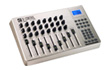
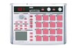
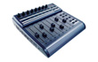

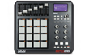
Signal
Midi instruments are not generating .wav or .mp3, but are sending numerical messages. Those messages have a very specific signal:
Signal Type
In lighting, we will use primarily 2 signal types:
- Key-On/Key-Off corresponding to a button pressed or released
- Ctrl-Change for sliders and other controls with a variable (0-128) setting
The instrument will send data depending on its internal assignment (Key-On/Key-Off or Ctrl-Change).
Ids
This signal contains in addition to the type, two other identifiers:
- Midi Channel, a kind of “midi universe”. There are 16 Midi Channels (from 0 to 15 in White Cat)
- Pitch, corresponding to the high of a note on a keyboard, which is our second identifier (from 0 to 127)
The identifiers allow us to definitively recognize a control. We have 16*127 possible selections.
Midi Channel is a good way to separate the signals originating from different devices, ie notes from a keyboard on Channel Midi 1, notes from Akai Pad on Channel Midi 3, notes form VVVV on Channel Midi 6…
Value
And, finally, the value of the signal, called velocity, expressed from 0 to 127.
This value has less range than dmx, which has 255 steps.
Concerning keyboards and pads, this value changes depending of the velocity of your touch.
Buttons on control surface generally have no velocity. They are triggers. They will have fixed levels for On/Off (127/0 for example).
Internal programming of a midi device
Midi is a simple system. But usages are very different from one user to another, and needs vary also. So midi devices may need to be:
- re-programed to emit signals (aka sending Ctrl-Change on an on/off button)
- re-programed for command reactions (ie toggle/latch)
- re-programed to level curves of sliders and knobs
This may be done thru the device shortcuts, or thru an external program (easier & faster) that you can install on your computer.
White Cat's reaction to a command
From version 0.7.6.6 onward, command analysis is done only on Midi Channel and Pitch. Type (Ctrl-Change or Key-On / Key-Off/Note ) is no longer considered. Certain hardware devices have their buttons preset at the factory to send Ctrl-Change for example.
Only Flash keys need an absolutely Key-On signal to work correctly.
In a perfect world, the new user will learn by heart
- button pressed= Key On
- button released= Key Off
- Slider or Knob= Ctrl-Change
- White Cat will look at which Midi Channel and pitch are inside the received signal and perform the actions associate with them.
Plugging and midi slots
A midi device may be plugged to your computer:
- with a midi interface (midi > usb) (old stuff)
- with a simple usb cable (you will perhaps need to install some drivers)
- thru a virtual connection, if it's software
The Same midi slot can't be assigned to two different software applications.
In order to achieve this, you will need to virtually split the signal, to allow the sending of the same signal to different apps on the same computer. Midi-Ox / MidiYoke is a free software suite enabling this.
It is a very strong, reliable and multipurpose application to work with when you are doing a lot of special configs with midi. MidiYoke is the perfect friend of the White Cat user when he wants to work with different apps on the same midi device.
Quick presentation of MidiYoke
This suite is donwloadable in two parts that you can download and install separately:
- MidiYoke, which enables you to split the midi signal to different slots, is a Input/Output router, very light and simple. It allows you to send a midi signal from software to software. It does not enable you to change the data.
- Software “A” receives a midi signal from a midi device, and sends it to MidiYoke slot 5. Software “B” will listen to MidiYoke slot 5. So the two software programs will listen to the same hardware data on the same computer.
- Software “A” sends midi out to slot MidiYoke 5. Software “B” will listen to this slot MidiYoke 5. The two software programs are on the same computer and one is remote controlling the other, sending commands in midi.
- Midi-Ox, which contains MidiYoke, enables you to transform and rout a midi signal, you can do what you want with it: change the value, the type of signal, limit data… But using Midi-Ox will cost you latency in transmission of the signal. MidiOx is useful when you are blocking on a device properties.
MidiYoke is included in Midi-Ox.
MidiYoke doesn't contains Midi-Ox.
This technique is usable also to receive or send midi data from White Cat.
Midi-Out
You can send from White Cat midi out to:
- remote control a motorized control surface:
if you use a physical slider, then thru the software, you will see that the software will refresh physically the position of your slider.
For example, with a BCF200.
- remote control other software programs, especially video ones (cross-fades, go , effects etc…), or sound such asSEQ CON
To know more about midi
Midi Configuration and Midi Assignments
This menu provides the following sub menus:
- Midi Devices: to connect White Cat to the different devices (physical and virtual) present on your system
- Options and Presets: to change and cheat the data received, and several utility things
- Midi Affect: to assign a midi signal to a command in White Cat
You obtain access to it by clicking [CFG MAIN] or pressing ( Shift-F11) then select [MIDI CONFIG] tab.
Midi Devices
You can connect one or more midi devices to White Cat.
Here this snapshot shows virtual slots from Midi Yoke and a generic midi device appearing as Périphérique audio usb, and with 2 inputs slots.
 .
.
The first two rows are corresponding to Midi Input in White Cat, the two rows on the right are the output from White Cat to the devices. To connect/disconnect to a midi slot, just click on it.
Rescan button allows you to scan devices on the system, and to replug unplugged devices without quitting White Cat.

Options and Presets
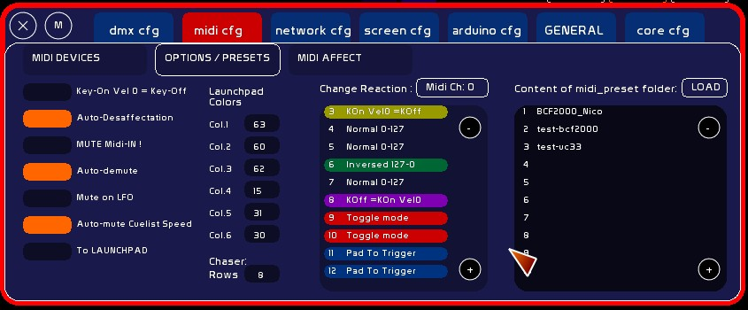
Midi Options
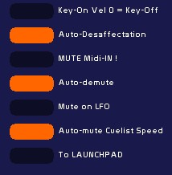
Key-On Vel0 = Key-Off
Certain devices needs to cheat the signal, to accommodate White Cat's needs.
So, if you are a BCF2000 owner and have buttons emitting only Key-ON Vel 0 and not Key-OFF, you will have a hard time using those buttons with the [RECALL] function in the Mini-faders window.
Trick: On certain control surfaces (like UC-33), buttons generate a Ctrl-Change toggle behaviour:
- when you push the button the first time, a Ctrl-Change Vel of 127 is sent
- when you push the button a second time, a Ctrl-Change Vel of 0 is sent
Using Key-On Vel0 = Key-Off, you will obtain from this button the ability to be assigned to the GO, without having to re edit button's parameters inside your hardware.
Auto-desaffectation
By default is ON.
This enables you to keep only ONE command assigned to ONE thing.
By setting it Off, you allow multiple assignments, so the same control can remotely control different things.
This option allows you to create some exotic usages:
aka: same midi command for a lighting fader and the volume of an audio player will allow you to trigger the light cue and sound cue with one command.
Be careful if you set this mode to off. Do not forget to set it back on after your special assignment.
Midi Mute
With certain controllers you will need to MUTE the input of data, so that it is not routed to the White Cat commands; Midi Mute is there for this.
- Click [Mute Midi !]
But from version 0.8.2.2 onward, a new muting system is there, allowing you to mute [GLOBAL] like here, or selectively. See MidiMute System at the end of this wiki page.
Auto-demute
v.0.8.2.3 Muted command is automatically demuted when the midi signal matches the level of the command in WhiteCat.
Mute on LFO
v.0.8.2.3 Concerns only faders. When an LFO is launched, midimute is automatically set ON.
Auto-mute CueList Speed
When you are using Cuelist speed control, it is automatically muted at the end of the crossfade if its value is different from normal sped( 64). This enables to put your midi fader at the right value, and coupled to Auto-demute opton, this is a strong option when you have a lot of memores linked and you want to take the hand smoothly on their speed.
To LAUNCHPAD
The Launchpad is a special midi device with a grid of 64 + 16 buttons. Launchpad is integrated inside White Cat because of White Cat's large number of button commands needed for live work. Its relatively reasonable price and robustness made it a top choice for me.
 One of specifics of the Launchpad is its LED backlighting system, which allows you to quickly find your buttons in the darkness of your control room .
One of specifics of the Launchpad is its LED backlighting system, which allows you to quickly find your buttons in the darkness of your control room .
By setting this function ON, you will send back to your midi output, command states (LFO/ Down/UP / GO / iCat page … ). Launchpad is a slow device, so just states are treated visually. Pulses like doing a Dock+/dock- or Ctrl-W/X doesn't refresh the backlighting.
Select [To Launchpad] if you wish to emit lighting states of the buttons.
Launchpad colors
Launchpad, and many new midi control surfaces that are back lit, are waiting to receive back the signal that they are emitting, at a certain value.
This value, from 0 to 127, determines the color of the lighting.
If you own midi devices with such a feature (like AKAI MPC40), you can reprogram the lighting value sent by typing a value in the color desired. It depends on the hardware specifications.
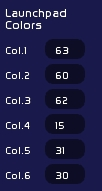
There are 6 colors defined for White Cat, based on Launchpad's default values:
- Color 1: 63 - orange
- Color 2: 60 - green
- Color 3: 62 - yellow
- Color 4: 15 - red
- Color 5: 31 - amber
- Color 6: 30 - dark orange
To redefine them:
- type the velocity to send to the device
- click the appropriate box to assign
To see Launchpad feedback commands available in WhiteCat, have a look to : Launchpad
Cheating midi input
This change is done on all recognized signals (Key-Off /Key-On or Ctrl-Change), and is done if Channel and Pitch are matching. This transformation of the signal is done in the following way:
- signal enters
- general transformation (Key-On Vel=0 or Key-Off) or not
- specific transformation (midi cheat)
- routing to White Cat commands
This order is important to keep in mind, as it will enable you to cheat the signal in many ways, depending on your hardware.
Normal 0-127
Normal behaviour.
Inverse 127-0
Certain devices, like Pronto lighting boards, have very strange peculiarities: if you ask it to emit in midi, it will give you an inverse signal on the second line of faders (127-0 instead of 0-127). This can't be changed in its menu.
So now you can reverse the signal in White Cat:
- click on CH. until you have the desired Midi Channel
- navigate thru the 127 pitches and click on the one you want until you have the inversion mode
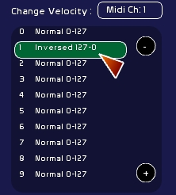
Toggle Mode
If your midi device can't be modified in the hardware, you can use White Cat's Toggle mode:
One each reception of a Key-On Vel 127, signal will be cheated in On/OFF 127/0, depending on its last state:
- a first press will set it On ( Vel=127)
- a second press on the button will set it Off ( Vel=0)
This may be interesting though for dedicated, maintained Flash or Levels.
KOn Vel0=KOff
Enables you to get a Key-Off if Key-On Vel=0
KOff=KOn Vel0
Enables you to get a Key-On Vel=0 if the signal is Key-Off
Presets
Midi presets are just a recording by users of their configuration.
Ideally
- a preset should be done from the factory config of the device.
- changes to its internal setup should be kept to a minimum, to make easily exchangeable presets while touring, without too much re-programming inside the device
- inner reprogramming should be clearly explained and written in a text file coming with the preset
- additional files used with PC editors of the device would be the best thing to provide with the preset
Create a preset
- set the device to its factory defaults
- reprogram inner IDs of commands only when necessary
- reset midi settings in White Cat (in SAVE)
- assign commands
- save and quit White Cat
- copy midi_affectation.whc and midi_send_out.whc from the last_save folder.
- go to midi_presets folder
- create a folder named Preset without special characters, accents or spaces in its name, and 24 letters MAX
- copy in this folder the 2 midi saved files
- attach a text file (.txt) created with notepad, showing in a clear manner the assignments of your preset, and eventually what you have reprogrammed in the device, and how to reprogramm it.
Loading a preset
- put the dowloaded folder inside the midi_presets folder
- open White Cat
- CFG / Midi / » Options/Presets
- select the preset
- click load
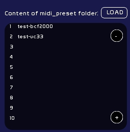
MIDI AFFECT
From version 0.7.6.6 onward, only one page, MIDI AFFECT brings together Faders Config and Button Config, allowing you to assign more easily commands. Assignments are now only possible in Solo mode or x8. Video tutorial should be redone.
Commands are assignable with Ctrl-Change, Key-On and Key-Off, for all commands (sliders or buttons).
Assign a midi signal to a White Cat command is done in this way:
- last received signal will be assigned
- select mode of assignment (solo or x8)
- put mouse over command (it will be outlined in Red)
- click to assign
- when White Cat receives a signal corresponding in Midi Channel and Pitch, it will execute the command.
Be careful that the assignment mode stays triggered and remember that you need to deselect it before touching other commands.
Step by step
So you need:
- to choose which signal to assign
- define assignment mode
- select the command to assign in midi
Selecting a signal to assign
- plug in your device, and move a slider or knob, or touch a button to obtain in front of »MIDI IN: signal to assign.
Last signal received will be the one which will be assigned to a command.
- generate internally a false midi signal thru FAKE MIDI, which will became the identifier to assign
to
- clear an assignment by selecting [CLEAR]: it will assign a nonexisting midi signal (CH: 999 P:999) to the command
Manually
Device must be selected in input in [MIDI DEVICES].
When you move or touch a control, a signal appears in front of »MIDI IN:
! Be aware that White Cat is filtering Midi received messages so that nothing other than Ctrl-Change, Key On or Key Off messages will show up.
Generate fake midi
- Type on the keyboard the Midi Channel, click [CH] to assign this value (from 0 to 15)
- Type on keyboard Pitch, click [Pitch] to assign this value (from 0 to 127)
- Click [Type] to select type of data: Ctrl-Change / Key-On / Key-Off
- Click [Fake MIDI]ON
- Select a commmand
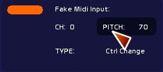
Why Fake Midi ?
Sometimes we need to guide other software programs thru midi. No need for special hardware, so, just to recreate false midi data and emit them on a virtual slot with Midi Yoke and MidiOut option of the faders.
Clear a command
Select [Clear] and set solo or x8.
If you need to erase ALL your midi assignments, simply go to save menu:
- click [SAVE]
- select [CHOICE]
- select Midi tab
- click [RESET]
Defining assignment mode
There are different modes of assignment, depending on the commands (a lot of similar commands, or solo commands)
Before version 0.7.6.6 you could attribute solo, x8, x48 or keyboard mode. This has been simplified to keep only solo and x8 modes.
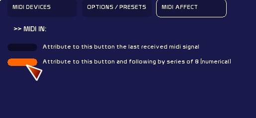
Solo Mode
- Select [Attribute to this Fader the last midi signal received]
Serial x8 mode
It can be very tiring to assign to 48 faders commands and signals. So there is a serial way to treat this assignment, by using the x8 command.
This serial action is based on incrementing Pitch Id OR, if selected, incrementing Midi Channel ( cf image below in Chan. mode, not in Pitch mode).
- Assignment by x8 will be done by selecting [Attribute to this Fader by series of 8 (numerical)]
If a command or an action exists in 8 or more, it may be assignable per 8 aka: Up commands of the faders (48). faders (48). color docks (8). ROI in Video tracking are 12, so first 8 may be assignable x8.
If the similar commands are less than 8, they need to be assigned in solo. Onstage fader is solo. Tracking video presets are 5, so you assign them solo.
Example showing x8 and Pitch or Channel mode
- On my midi device, I have the 8 sliders having following IDs:
Pot. 1: Ch:1 Pitch 8
Pot. 2: Ch:2 Pitch 8 Pot. 3: Ch:3 Pitch 8 etc .... until Pot. 8: Ch:8 Pitch 8
Despite assigning them manually one by one:
- I set serial mode in [Channel]
- I set the x8 assignation ON
- I bring up the first fader on my midi device
- I click first fader (Nr 1 for example) which is outlined in red
- assignment is done for the 8 Faders in the Channel series
If my device has the following type of IDs for the 8 sliders:
Pot. 1: Ch:0 Pitch 16 Pot. 2: Ch:0 Pitch 17 Pot. 3: Ch:0 Pitch 18 etc .... until Pot. 8: Ch:0 Pitch 23
I will let serial mode in [Pitch].
Assigning midi to commands
once your mode has been chosen:
- roll the mouse over the command, it will appears in red (if its window is selected in orange outline)
- click on it to perform the assignment operation
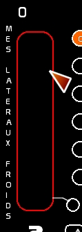
Midi-Commands that are assignable
Please see Chart of midi assignments
MidiMute (global)
The MidiMute Button is a shortcut enabling you to mute all assignments to commands.
You will mute ALL MidiMute(local) in White Cat. This command may be manipulated with a midi button, and will not be muted ( ;-P ).
No assignments will be remote controlled until you are OFF.
When you set ON MidiMute (global) all MidiMute (local) are set. When you set OFF MidiMute (global) all MidiMute (local) are closed.
You may use MidiMute(local) even though MidiMute (Global) is ON.
MidiMute (local)
MidiMute (local) is a little circle generally placed down by the MidiOUT hanging circle, that is assigned to any slider in White Cat. If you set this circle ON, the command will no longer listen for midi signal. The midi signal level will appear, enabling you to replace your faders physically, without touching the levels in White Cat. Level appears as a white line.
What is affected by MidiMute (local)?
Everthing with a slider or a wheel in White Cat:
- Grand Master
- faders
- faders' lfos
- cuelist (X1/X2/speed)
- decay in video tracking
- hue wheel in trichronomy
- chasers tracks
- audio controls (level, pitch, pan)